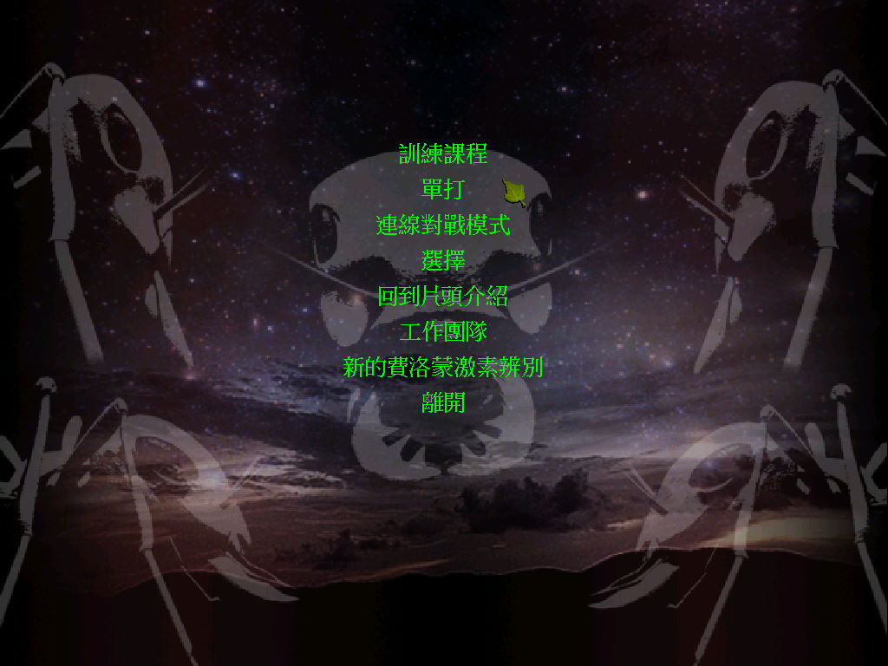
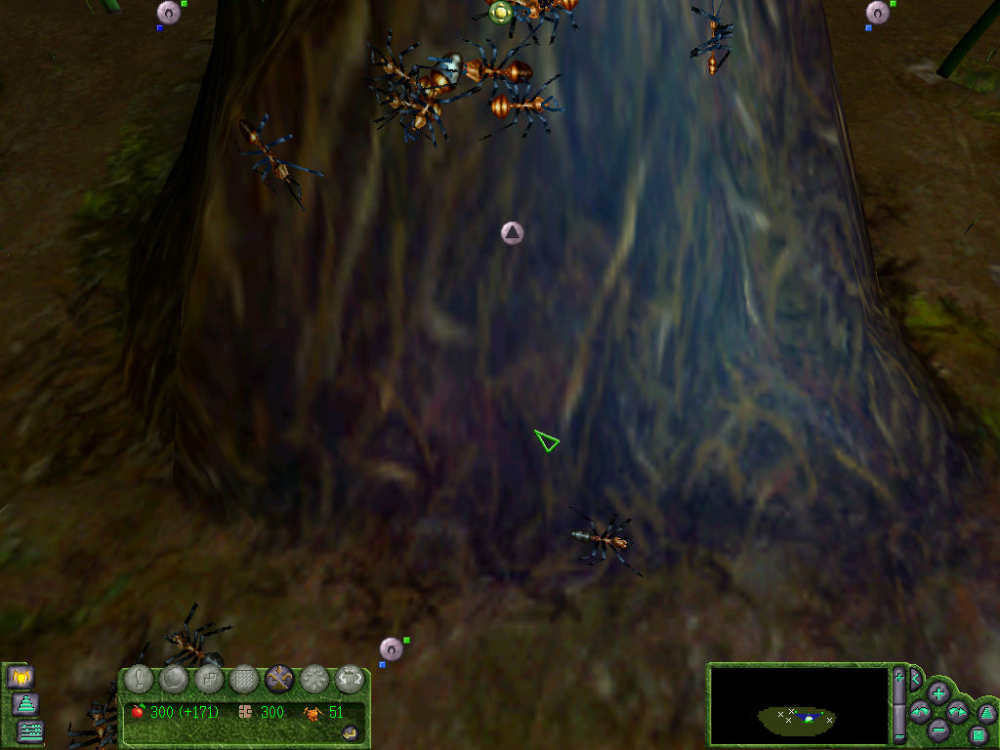

名稱：螞蟻雄兵 (Empire of the Ants，中文／英文版)
簡介：Microids 2000年出品的即時戰略遊戲，由Strategy First代理發行，2001年由協和中
文化並代理發行 [待補]。


保護：不明
備註：VirtualBox需搭配WineD3D，但畫面更新速度會有點慢，虛擬機建議使用VMware。
檔案：setup_empire_of_the_ants_(2001)_1.61_(63327).rar = GOG英文1.61版安裝檔